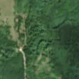
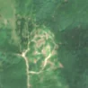

3,4 ha de pădure schimbată lângă Dolhești
Între vara lui 2025 și 7 mai 2026, pe aproximativ 3,4 ha de pădure din comuna Pipirig, lângă Dolhești, județul Neamț, imaginile Sentinel-2 arată că vegetația a dispărut sau s-a schimbat puternic. În registrul public există o autorizație de tăiere pentru acest loc.
Autorizația de tăiere
cu autorizație
Parcela autorizată acoperă zona, iar autorizația era valabilă când s-a tăiat.
Ce se vede în poze: În poza «înainte» zona marcată era acoperită de pădure deasă, iar în poza «după» apare un petic mare de pământ gol, deschis la culoare, cu urme de drumuri de tragere a lemnelor, în timp ce pădurea din jur a rămas verde. Asta arată că arborii au fost tăiați și scoși de acolo.


Înainte și după: Copernicus Sentinel-2, 10 m pe pixel, conturul zonei cu portocaliu. Poza detaliată (Esri World Imagery) e de acum 1–4 ani: arată ce era acolo înainte, nu tăierea.
Pe scurt
- Identificator
- 20260507_47170_26085
- Locul
- Dolhești, comuna Pipirig, județul Neamț (SIRUTA 123521)
- Coordonate (centru)
- 47.17043, 26.08487 · Google Maps · OpenStreetMap
- Suprafața
- 3,4 ha (din pixeli de 10 m; ± câțiva pixeli pe margine)
- Pădurea întreagă
- în vara lui 2025 (de atunci, nori sau iarnă)
- Prima imagine cu schimbarea
- 7 mai 2026
- Imagini în care se vede schimbarea
- 10
- Cât de sigur e semnalul din satelit
- medie
- Autorizația cea mai apropiată
- APV 2400022302070 · Ocolul Silvic Pipirig, valabilă 17 ianuarie 2025 – 30 decembrie 2025, la 0 m de zonă
- Terenul
- pădure de stat, după amenajamentul silvic publicat
- Pădure pierdută în jur, alți ani
- 2018, 2019, 2020, 2024, 2025 (Hansen)
- Garda Forestieră
- Suceava
Dacă vrei să verifici sau să sesizezi
- Pădurile din județul Neamț sunt în grija Gărzii Forestiere Suceava, care controlează tăierile și dă amenzile.
- Autorizația găsită în zonă e emisă de Ocolul Silvic Pipirig.
- Formularul Gărzii Forestiere Naționale primește sesizări și fără nume. Trimite linkul acestei pagini, coordonatele și pozele. Dacă tăierea e în desfășurare, sună la 112.
- Autorizațiile și transporturile de lemn se pot căuta în Inspectorul Pădurii.
Pagina arată ce se vede din satelit și ce scrie în registrul public; nu e o dovadă în sine.
Cum citezi zona
Linkul acestei pagini nu se schimbă. Dacă zona iese vreodată de pe hartă, pagina rămâne, cu data și cu ce știam despre ea.
Pădurea RO, zona 20260507_47170_26085: 3,4 ha, Dolhești, comuna Pipirig, județul Neamț; schimbare văzută din satelit între vara lui 2025 și 7 mai 2026. https://iliemihai.github.io/padurea-ro/zona/20260507_47170_26085/ (consultat la [data]). Date: CC BY 4.0.
Datele zonei: GeoJSON · toate zonele: date deschise · licența CC BY 4.0.
Istoricul zonei pe hartă
Starea se poate schimba când registrul publică o autorizație sau când analistul vede poze mai bune. O ținem aici, ca un link citat să arate și ce spuneam atunci.
Pe hartă cel târziu din 5 noiembrie 2026.
- 5 noiembrie 2026 – azi · cu autorizație
Detalii tehnice, pentru verificare
De ce acest nivel de încredere:
- văzută schimbată în 10 imagini diferite
- peste 3 ha
- pădurea din jur e neschimbată
- ultima dată am văzut-o intactă în vara lui 2025 (de atunci, nori sau zăpadă)
- fără părerea AI
Ce a văzut analistul cu context: În Sentinel-2 din 2026-06-30 apare un petic de aproximativ 3,4 ha, cu sol dezgolit și crăci sau resturi de exploatare, cu margini destul de clare, legat de drumul existent aflat la 110 m. Zona nu continuă ca fâșie în afara conturului, deci nu pare șantier. Poza detaliată din 2021 și imaginea din 2025 arată pădure închisă, ceea ce se potrivește cu coronamentul de 87% și cu 99% copaci. Autorizația APV 2400022300050 (Ocolul Silvic Pipirig) se suprapune 97%, dar a expirat în iunie 2024, iar registrul indică «neacoperit»; taierea pare deci în afara perioadei valide, dar acest lucru trebuie verificat la sursă.
- Placa Sentinel-2
- 35TMN
- NDVI de referință
- 0.89
- NBR de referință
- 0.63
- Scăderea în pădurea din jur
- 0.01
- Persistență
- 0.94
- NDVI / NBR după
- 0.461 / 0.206
- Analistul cu context (model)
- taiere_rasa · 0.75
Cum se calculează fiecare: metodologia.
Pune harta zonei într-un articol
Copiază codul în articol (merge în majoritatea site-urilor de știri). Sau pune doar linkul: WhatsApp, Facebook și X arată singure poza zonei.